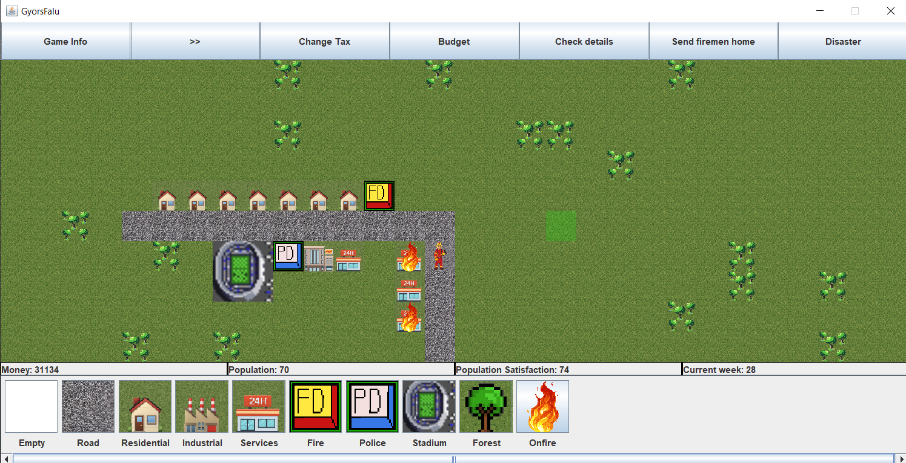
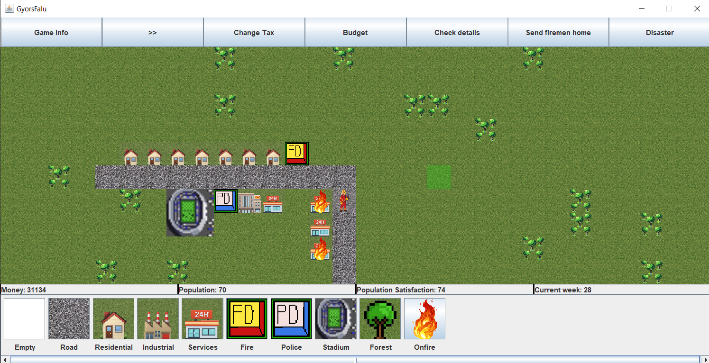
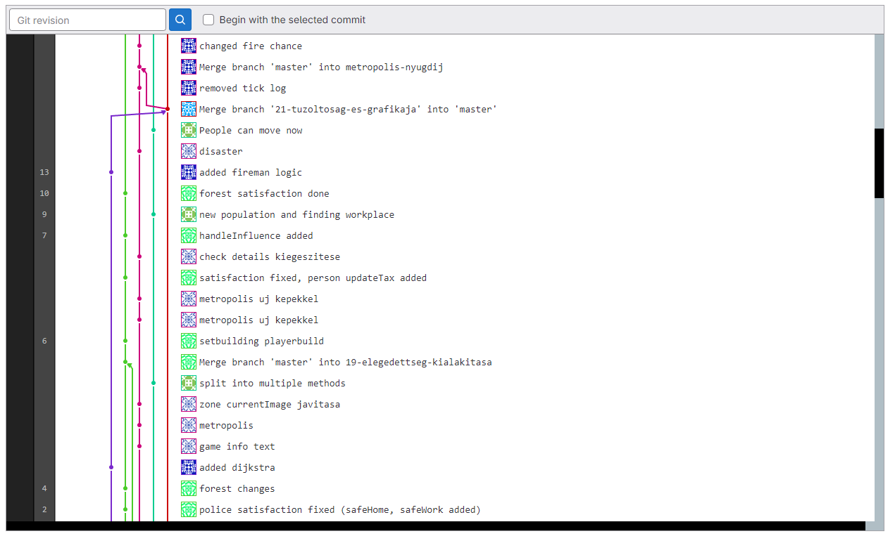
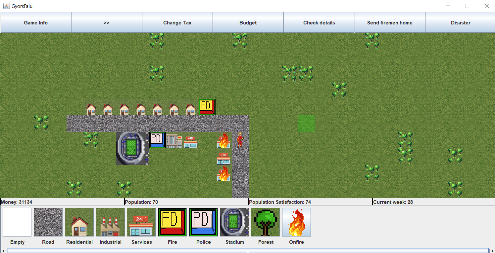
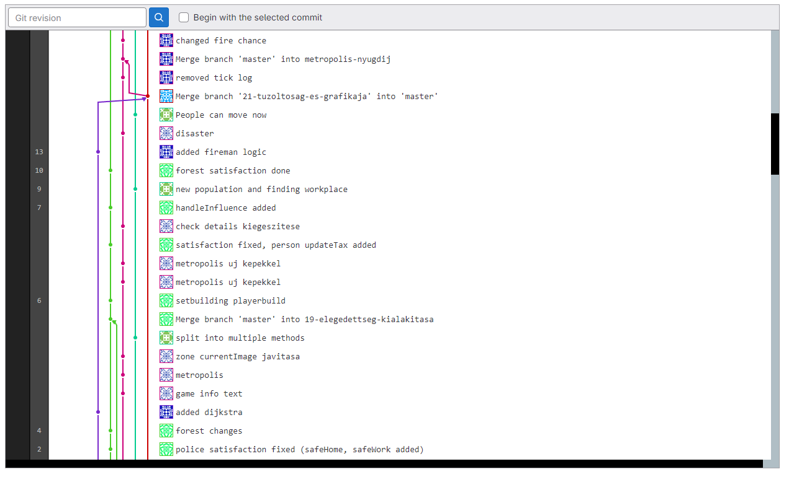

Liu Bálint egyetemi projektek
Rövid leírás: A feladat egy városépítő szimulátor elkészítése volt kötelező és szabadon választható funkciókkal. A programozási nyelv-et a csapat választotta, nem volt kötelezően megadva.
A projektet 3 másik csoporttársammal oldottuk meg, és hogy gond nélkül tudjunk együtt dolgozni, GitLab-ot használtunk. A projektben Maven-nel 40 teszt ellenőrzi a helyes működést.
Teljes feladatleírás megtekintése.
Csomagolt játék letöltése.
Intellij projekt letöltése.
Néhány gép a játékról és GitLab-ról:

 




Teljes feladatleírás megtekintése.
Csomagolt játék letöltése.
Intellij projekt letöltése.
Néhány gép a játékról és GitLab-ról:


Rövid leírás: A feladat egy általam választott témáról készíteni egy weboldalt számos feltétel alapján volt, például:
Oldal megtekintése.
Projekt letöltése.
- A weblap legalább négy, statikus HTML oldalból áll, a kezdőlap index.html néven lett elmentve. Minden HTML oldal, ami a csomagban van, be is van linkelve az oldalakra, nincs felesleges HTML állomány.
- Van olyan oldal, amelyben egy felhasználói élményt javító JavaScript kód van beillesztve (pl. választás alternatív stíluslapból, betűméret váltás, képgaléria, ...) A Bootstrap keretrendszer komponensei is elfogadhatóak ennél a pontnál (pl. Carousel).
- Alternatív, nagybetűs, nagy kontrasztú stílus változat elérhető a gyengénlátó felhasználók számára minden oldalon.
Oldal megtekintése.
Projekt letöltése.
Rövid leírás: A feladat egy Lámpajáték elkészítése volt javascript-ben.
Játék és leírása megtekintése
Követelmények
Projekt letöltése
Játék és leírása megtekintése
Követelmények
Projekt letöltése
Rövid leírás: A feladat egy 2 személyes Tron játék készítése volt Java-ban.
Játék letöltése (Ui.: Ebben a .jar-ban nincs benne az adatbázis része, hogy anélkül is lehessen futtatni.)
Projekt letöltése (Ui.: Ebben a Netbeans projekt-ben viszont benne van az adatbázis rész is.)


Játék letöltése (Ui.: Ebben a .jar-ban nincs benne az adatbázis része, hogy anélkül is lehessen futtatni.)
Projekt letöltése (Ui.: Ebben a Netbeans projekt-ben viszont benne van az adatbázis rész is.)
Rövid leírás: A feladat egy c++ osztály írása volt, amivel könnyebben lehet használni a tömböket
Fájlok letöltése (Ui.: A main.cpp a feladat része, és tartalmazza a teljes feladatleírást. Az én megoldásom csak az arutil.h)
Fájlok letöltése (Ui.: A main.cpp a feladat része, és tartalmazza a teljes feladatleírást. Az én megoldásom csak az arutil.h)